manifesto

Il riuso aperto dei dati rafforza la creatività attraverso il riuso: su OpenDataHandbook trovi maggiori informazioni, mentre sui gradi di apertura consulta 5 Stars Data
Arduino and Raspberry are the most famous but the sensors are so many and "between us". We trust in the evolution of Internet of Things (IoT) by the Internet of Places through the different contests
Yea, I guess hes good at computers or something, but let me ask you this: If a cat always lands on its feet, and buttered bread always lands butter side down, what would happen if you tied buttered bread on top of a cat?
Back in old country only nerds who is playing on computers. Now all bros is wanting to make codes and junk. I lost foot in war. You dont see girls asking me about homework.
Yea, I guess hes good at computers or something, but let me ask you this: If a cat always lands on its feet, and buttered bread always lands butter side down, what would happen if you tied buttered bread on top of a cat?
Yea, I guess hes good at computers or something, but let me ask you this: If a cat always lands on its feet, and buttered bread always lands butter side down, what would happen if you tied buttered bread on top of a cat?
Yea, I guess hes good at computers or something, but let me ask you this: If a cat always lands on its feet, and buttered bread always lands butter side down, what would happen if you tied buttered bread on top of a cat?
 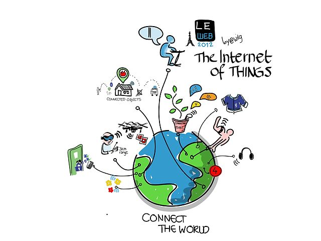
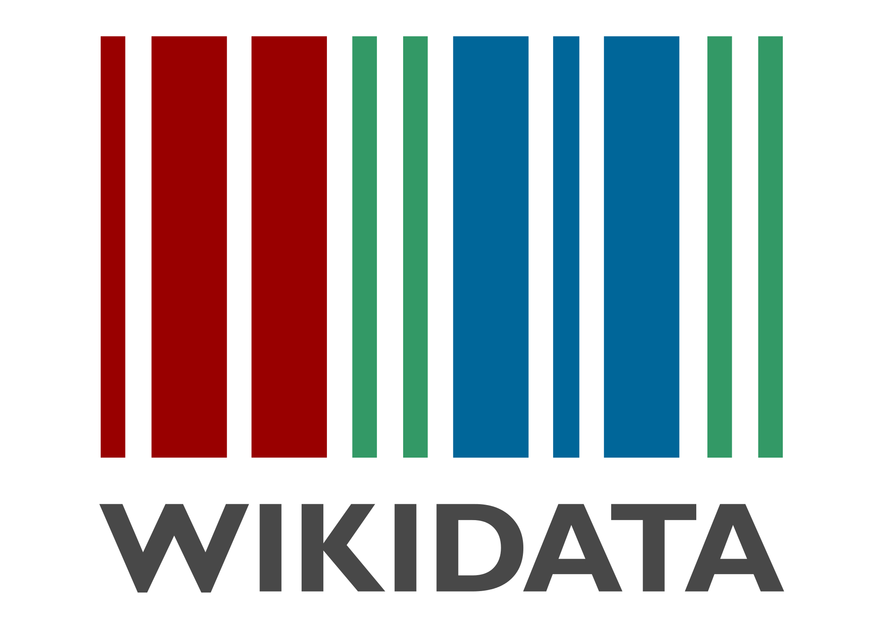
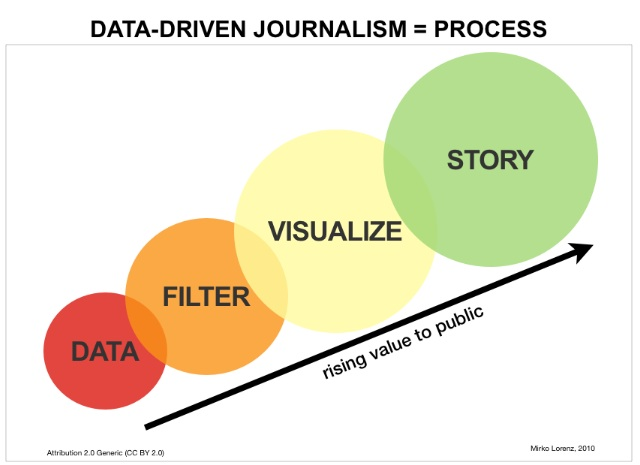
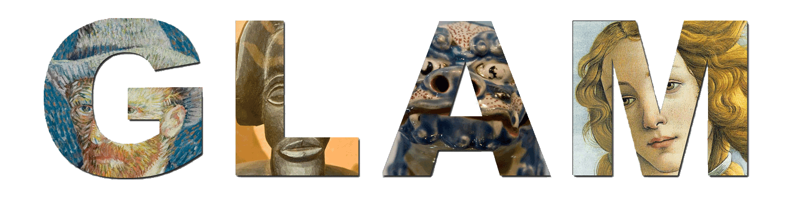
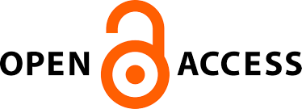
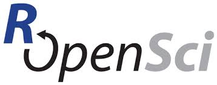
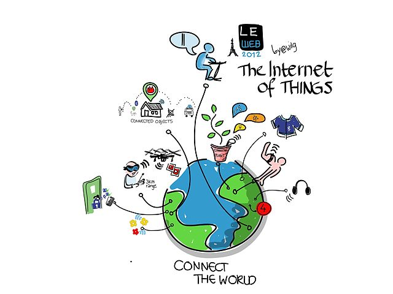
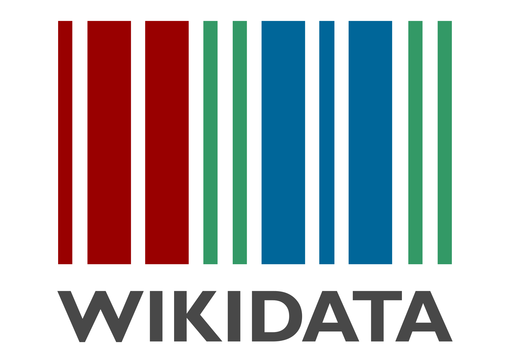
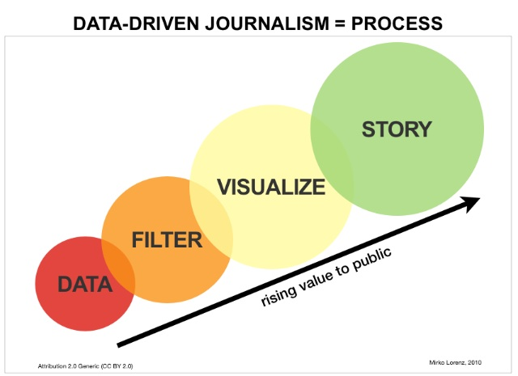
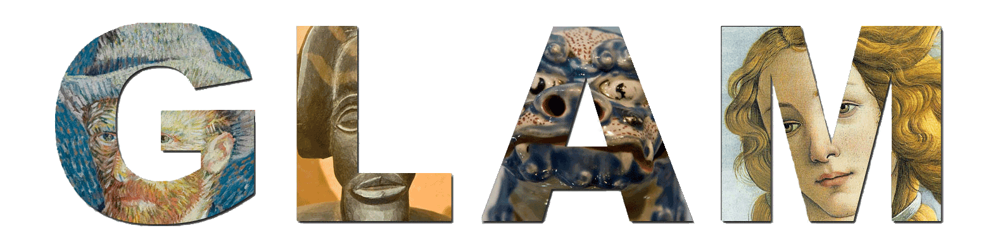
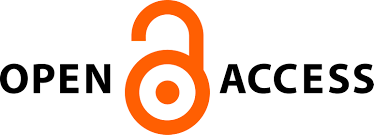
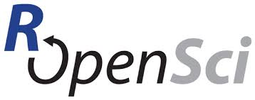